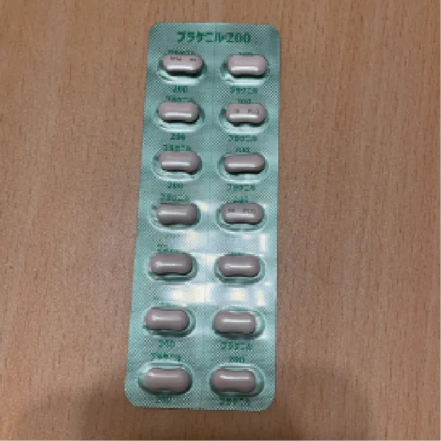
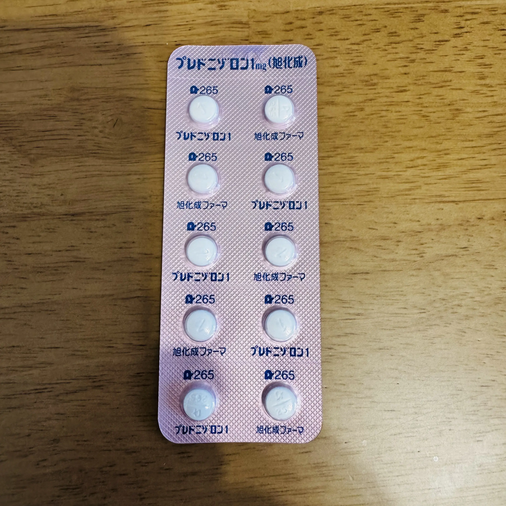
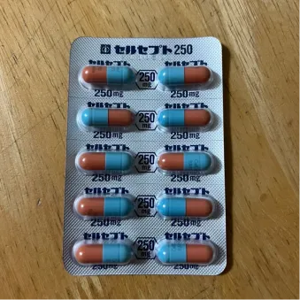
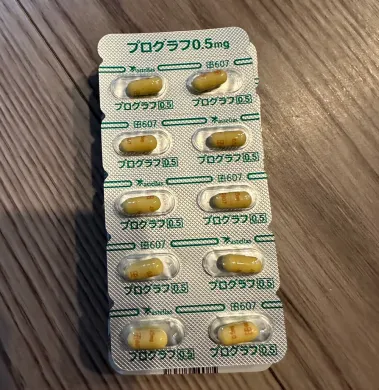
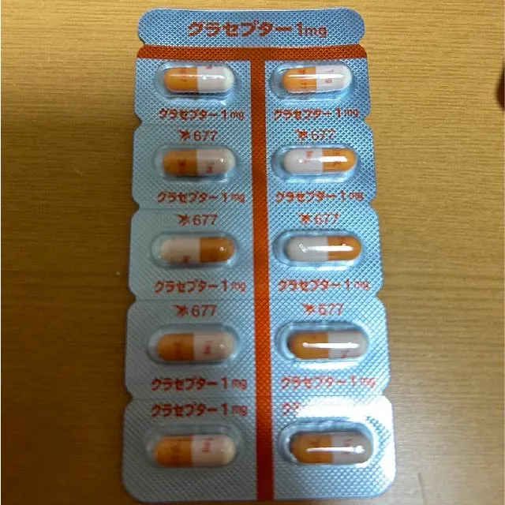
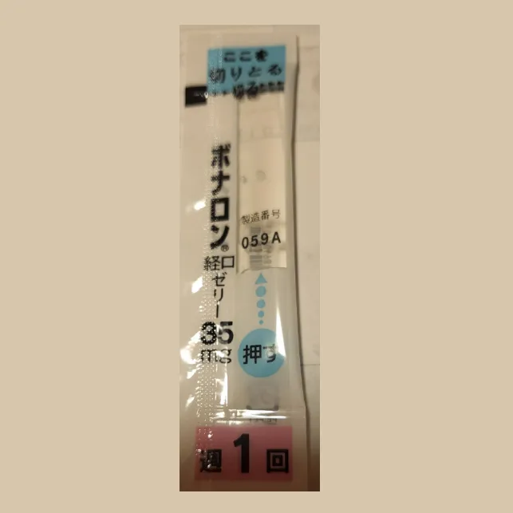
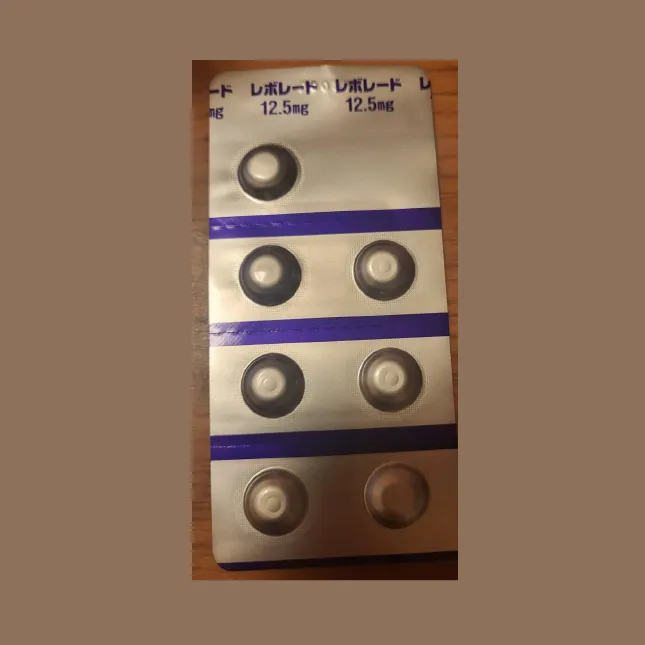
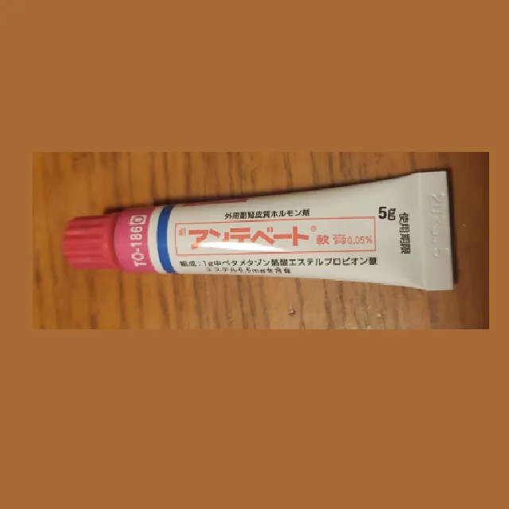

お薬について
SLEの治療に使われる薬を、種類別にまとめました。
実際にどの薬を使うかは症状や臓器の状態によって異なります。お薬のことは主治医・薬剤師に相談しましょう。
SLEのメインとなる薬
過剰な免疫反応をおだやかにおさえる、いまのSLE治療の中心になる薬です。

免疫調整剤
プラケニル
ヒドロキシクロロキン
SLEと診断されたら最初に飲むことが多い薬です。過剰な免疫反応をおだやかにおさえ、関節痛・発疹・倦怠感などの症状をやわらげます。ステロイドの量を減らすことも期待できます。
従来からある薬
以前から治療に使われてきた薬です。炎症や痛みをおさえる力が強く、今でも症状や急な悪化に合わせて使われます。

ステロイド／グルココルチコイド
プレドニン
プレドニゾロン
少し前までは治療の中心となる薬でした。今はできるだけ少ない量・短い期間にしようとしています。それでも、急な悪化をおさえたいときには現在でも使われます。

非ステロイド性抗炎症薬
ロキソニン
ロキソプロフェン
痛みや熱、炎症をおさえる薬です。関節の痛みや発熱など、SLEの症状をやわらげるために使われることがあります。ただし腎臓への負担になることがあるため、使い方には注意が必要です。
免疫抑制剤
免疫の働きをおさえて臓器へのダメージを防ぎ、ステロイドを減らす助けにもなる薬です。

セルセプト
ミコフェノール酸モフェチル
免疫の働きをおさえて、臓器へのダメージを防ぐ薬です。ステロイドと組み合わせて使うことが多く、ステロイドを減らす助けにもなります。妊娠中は使えないため、使用中は避妊が必要です。

プログラフ
タクロリムス
免疫の働きを強力におさえる薬で、主にループス腎炎の治療に使われます。効果が高い一方、腎臓や血圧への影響が出ることがあるため、定期的な血液検査が必要です。

イムラン
アザチオプリン
免疫の働きをおさえる薬で、ステロイドを減らすサポート役として使われることが多いです。効果が出るまでに時間がかかりますが、長い期間にわたって病気を落ち着かせるのに役立ちます。

リウマトレックス
メトトレキサート
関節リウマチの治療に用いられ、免疫の働きをおさえて炎症を鎮める薬です。関節の症状や皮膚症状に効果が期待できます。飲むのは週1回だけですが、葉酸を一緒に補うことが大切です。

サーティカン
エベロリムス
免疫の働きをおさえる薬で、主にループス腎炎の治療に使われます。プログラフと似た仲間の薬ですが、腎臓への負担が比較的少ないとされ、状況に応じて使い分けられます。

ネオーラル
シクロスポリン
免疫の働きをおさえる薬で、ループス腎炎などの治療に使われます。プログラフと同じ仲間の薬です。腎臓や血圧への影響が出ることがあるため、定期的な検査が必要です。

グラセプター
タクロリムス
プログラフと同じ成分の薬で、効果や注意点も同じです。免疫の働きをおさえて臓器へのダメージを防ぎます。腎臓や血圧への影響があるため、定期的な血液検査が欠かせません。
生物学的製剤
免疫の特定の働きをねらっておさえる新しいタイプの薬で、注射や点滴で投与します。

ベンリスタ
ベリムマブ
SLEの治療のために開発された薬で、異常に活発になったB細胞の働きをおさえます。注射または点滴で投与します。ステロイドを減らす助けにもなり、再発を防ぐ効果が期待できます。

サフネロー
アニフロルマブ
免疫の働きを過剰に強くしてしまう「1型インターフェロン」というたんぱく質の働きをおさえる薬です。点滴で投与します。皮下注射（自己注射）のタイプもあります。
リツキサン
リツキシマブ
抗がん剤にも使われ、厳重に管理されている薬です。B細胞そのものを減らす力の強い薬で、ループス腎炎などに使えるようになりました。点滴で投与し、入院して受けることが多いです。

アクテムラ
トシリズマブ
IL-6という炎症のスイッチを止める生物学的製剤です。関節リウマチに使われ、ループス血管炎にも使われることがあります。点滴（静脈）タイプもあります。
対処療法の補助的な薬
骨を守る、血流をよくする、血小板を増やすなど、症状や副作用に合わせて使われる飲み薬です。

ロカルトロール
カルシトリオール
腎臓の働きが低下すると不足しがちな、活性型ビタミンDを補う薬です。骨を丈夫に保つ働きがあり、長い期間ステロイドを使っている場合などに処方されることがあります。

アルファロール
アルファカルシドール
骨粗しょう症の治療に広く使われる活性型ビタミンD3製剤です。骨折のリスクを減らす効果が期待できます。

プロサイリン
ベラプロストナトリウム
血管を広げて血流をよくする薬です。手足の先が白くなったり青くなったりするレイノー現象の予防や、末端の血流改善に使われます。出血しやすい状態のときは使えません。

ボナロン経口ゼリー
アレンドロン酸Naゼリー
骨を壊す働きをおさえて骨を丈夫に保つ薬です。長い期間ステロイドを使うと骨がもろくなりやすいため、骨粗しょう症の予防・治療に使われます。週1回、起床後すぐに水で服用します。

レボレード
エルトロンボパグ
血小板を増やす働きをうながす薬です。SLEでは血小板が減少することがあり、ほかの治療で効果が不十分な場合に使われます。1日1回、食事の前後2時間を空けて服用します。

ミノドロン
ボノテオ錠・リカルボン錠
骨を壊す働きをおさえて骨を丈夫に保つ薬です。長い期間ステロイドを使うと骨がもろくなりやすいため、骨粗しょう症の予防・治療に使われます。月1回または週1回服用するタイプがあります。

リセドロン酸Na錠
アクトネル・ベネット
骨を壊す働きをおさえて骨を丈夫に保つ薬です。長い期間ステロイドを使うと骨がもろくなりやすいため、骨粗しょう症の予防・治療に使われます。毎日・週1回・月1回と服用タイプが選べます。
皮膚に塗る薬
皮膚の保湿や炎症をおさえるために、患部に塗って使う外用薬です。

ヒルドイド
ヘパリン類似物質
皮膚の保湿や血行を改善する薬です。SLEでは皮膚が乾燥しやすく、炎症や傷つきやすい状態になりやすいため、皮膚のケアとして処方されることがあります。クリームやローションなど剤形が選べます。

アンテベート
ベタメタゾン酪酸エステルプロピオン酸エステル
皮膚の炎症をおさえるステロイド外用薬です。SLEでは皮膚に赤みや発疹が出ることがあり、その症状をやわらげるために使われます。強めのステロイドのため、長い期間の使用には注意が必要です。

プロスタンディン
アルプロスタジル アルファデクス
皮膚の潰瘍や床ずれの治療に使う軟膏です。血流を改善して傷の回復を助ける働きがあります。SLEで皮膚に潰瘍ができたときや、血流が悪くなった部位のケアに使われることがあります。

プロトピック
タクロリムス水和物軟膏
ステロイドとは異なる成分で皮膚の炎症をおさえる塗り薬です。顔や首など皮膚の薄い部分にも使いやすく、SLEの皮膚症状である赤みや発疹の治療に使われることがあります。
作成日・更新日

おすすめのページ

いま、気になること
気になる言葉を押すと関連ページに飛びます